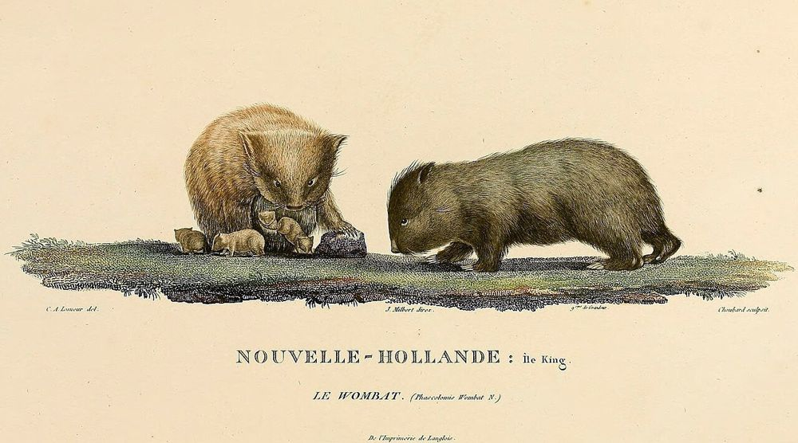

1Vombat kimdir?
Vombatlar Avustralya'ya özgü, tıknaz, kısa bacaklı keseli hayvanlardır. Küçük bir ayıyı andırırlar. Güçlü pençeleriyle toprak altında uzun tüneller ve yuvalar kazarlar. Otla beslenirler ve çoğunlukla geceleri aktiftirler.
Vombatların kesesi, kanguruların aksine geriye doğru açılır. Bu sayede toprak kazarken yavrularının bulunduğu keseye toprak dolmaz.
2Dünyanın tek küp dışkısı
Vombatların en ünlü özelliği küp şeklinde dışkı üretmeleridir. Bilinen başka hiçbir hayvan bunu yapmaz. Bir vombat her gece 80 ile 100 arasında küçük küp bırakabilir. Küplerin kenarları yaklaşık 2 cm civarındadır.
Uzun süre bunun nasıl mümkün olduğu bilinmiyordu. Hayvanın kalçasının köşeli olduğuna dair şakalar bile vardı. Oysa vombatın anüsü de diğer hayvanlarınki gibi yuvarlaktır.

3Sır bağırsakta
2021'de Soft Matter dergisinde yayımlanan bir çalışmada, araştırmacılar trafik kazasında ölmüş vombatların bağırsaklarını inceledi. Bağırsağın son bölümünün her yerinin aynı sertlikte olmadığını keşfettiler: Bazı şeritler daha sert, bazıları daha esnekti.
Bağırsak kasıldığında esnek bölgeler daha fazla, sert bölgeler daha az hareket ediyor. Bu fark dışkıyı yavaş yavaş biçimlendiriyor ve köşeler oluşturuyor. Ayrıca vombatların sindirimi çok yavaştır. Dışkı bağırsakta uzun süre kalarak iyice kurur ve bu sert şeklini korur.
Araştırmacılara göre bu keşif, küp şekilli nesnelerin kalıp kullanmadan üretilmesi gibi mühendislik alanlarında da ilham verebilir.
4Küp neye yarıyor?
Vombatlar kötü görür ama koku alma duyuları çok güçlüdür. Dışkılarını kayaların, kütüklerin ve tümseklerin tepesine bırakarak bölgelerini işaretler ve birbirleriyle iletişim kurarlar.
Bilim insanları küp şeklinin, dışkının bu yüksek ve eğimli yerlerden yuvarlanıp düşmesini zorlaştırdığını düşünüyor.
💡 Biliyor muydun?
- Vombatlar kısa mesafede saatte 40 km'ye yakın hızla koşabilir.
- Bir vombatın sırtının arkası, kıkırdakla güçlendirilmiş sert bir plaka gibidir. Tehlike anında tüneline girip bu bölümle girişi tıkar.
- Çalışmayı yapan ekip, 2019'da fizik dalında 'Ig Nobel' ödülü aldı. Bu ödül önce güldüren, sonra düşündüren araştırmalara verilir.
✅ Kaynaklar
📷 Görseller
- Kapak: JJ Harrison · CC BY-SA 3.0 · Wikimedia Commons
- Fransız ressam Charles-Alexandre Lesueur'ün 1800'lerin başında çizdiği vombatlar: Charles-Alexandre Lesueur · Public domain · Wikimedia Commons